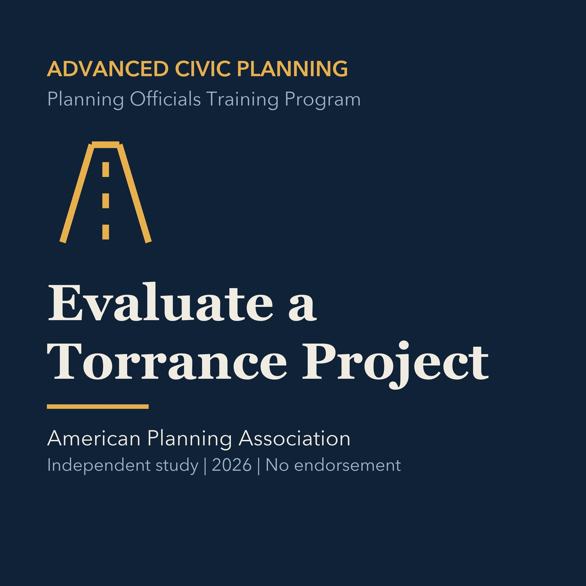

EPISODE 36
Capstone: Evaluate a Torrance Project
Combines legal, planning, transportation, housing, and fiscal tests in a documented project review.

- Stable GUID
1d9fdc34-5943-5d33-82e4-8600b5c4c981- Release
- advanced-civic-planning-v2026.2
- SHA-256
cca232c274e5dc66612fd767036e009256841b3e456dbb5dbd4666cc6fc0f3e4